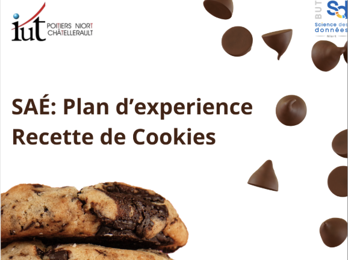
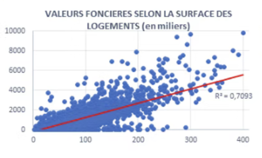
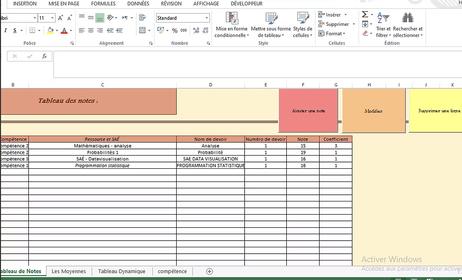
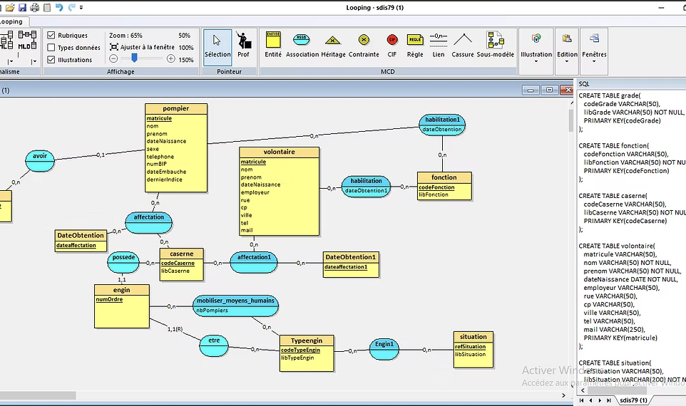
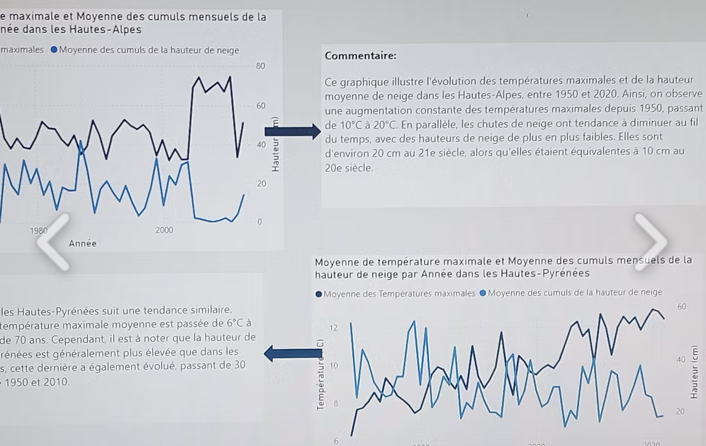
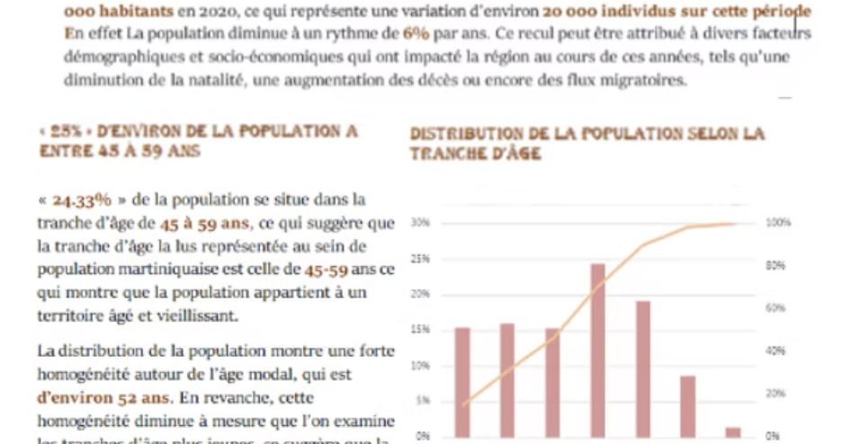

Portfolio
Missions au Sein de La Banque Postale :
Gestion, Structuration, Fiabilisation et Optimisation des données à partir du Datalake. Contribution aux activités de contrôle, d’analyse de données, gestion des incidents et pilotage. Création de tableaux de bord interactifs et à la mise en place de solutions de visualisation des données
Projet réalisés en formation :
Description des Importations en Irlande (2010-2023) :
À l’aide d’Excel, j’ai réalisé une analyse statistique complète incluant l’étude des tendances, la variabilité interannuelle, et les composantes saisonnières. Trois modèles de régression (linéaire, exponentiel, quadratique) ont été comparés à travers des indicateurs comme le coefficient de détermination et la somme des erreurs au carré. Le modèle quadratique, s’étant avéré le plus performant (R² = 0,84), a été retenu pour établir des prévisions sur l’année 2024, ajustées avec des coefficients saisonniers corrigés. Ce travail m’a permis de mobiliser des compétences en séries chronologiques et en modélisation prédictive dans un contexte économique réel. Voir le projet
Plan d'Éxperience (Recette de cookies):

Sous un groupe 2, il nous est demandé de mener un projet autour des plans d’expériences. Le but est de comprendre comment différents facteurs influencent la qualité de cookies que nous préparons. Nous avons choisi plusieurs facteurs comme la température de cuisson, le temps de cuisson, la quantité de sucre, ou encore le type de chocolat utilisé. Au lieu de tester toutes les combinaisons possibles, ce qui prendrait trop de temps, nous utilisons un plan d’expériences pour organiser les essais de manière efficace. Cela nous permet de tirer des conclusions fiables avec un nombre limité de tests. Une fois les cookies préparés, ils sont notés selon plusieurs critères (comme le goût ou la texture). On utilise ensuite le langage R pour analyser les résultats grâce à des modèles de régression. Cela nous aide à identifier quels facteurs ont le plus d’impact sur la note finale, et à mieux comprendre les interactions entre eux. Voir le projet
Conformité réglementaire pour traiter et analyser des données :
Dans le cadre de ce projet réalisé en groupe de quatre, nous avons été placés dans la peau d’un Délégué à la Protection des Données (DPO) avec pour mission de mettre en conformité les pratiques de traitement des données d’une entreprise fictive selon le Règlement Général sur la Protection des Données (RGPD). Pour ce faire, nous avons d’abord analysé la proportionnalité et la pertinence des données collectées, puis mis à jour les contrats et les formulaires afin d’y intégrer les mentions légales nécessaires. Nous avons également vérifié le recueil du consentement pour les données sensibles, supprimé les informations superflues, mis en place des mesures de sécurité pour limiter l’accès aux données, et enfin créé un registre des activités de traitement. Ce projet nous a permis d’appréhender concrètement les exigences du RGPD et de développer une approche rigoureuse en matière de gestion des données personnelles.
Voir le projetTechniques de sondage et méthodologie de l'enquête :
Dans le cadre du Forum National de l’Économie Sociale et Solidaire & de l’Innovation Sociale, qui s’est déroulé en janvier 2024, une enquête a été menée auprès des participants, sur place et après l’événement. Cette enquête avait pour objectifs de mieux comprendre le comportement des visiteurs, d’évaluer leur satisfaction et d’identifier des axes d’amélioration pour les prochaines éditions du forum. Pour ce faire, nous avons réalisé une présentation portant sur plusieurs aspects : les caractéristiques sociodémographiques des répondants, leur comportement durant le forum, ainsi que leur avis sur l’édition 2024. L’analyse des résultats s’est appuyée sur la création de graphiques à l’aide du logiciel Sphinx, permettant de visualiser les données de manière claire et synthétique.
Voir le projetAnalyse de données, Reporting et datavisualisation:
Ce projet vise à créer un outil dynamique pour analyser les accidents de la vie courante (AcVC) en France, en identifiant leurs caractéristiques et facteurs de risque, ainsi que des mesures de prévention. Nous avons nettoyé et préparé les données avec R, puis cartographié la cohorte pour évaluer sa représentativité par rapport à la population française, en utilisant PowerBI pour les visualisations. Ensuite, nous avons conçu un outil intuitif et automatisé avec Python pour intégrer de nouveaux jeux de données. Enfin, nous avons rédigé deux manuels : un manuel technique sur l'ergonomie de l'outil et un guide d'utilisation.
Régression des données réelles :

Pour réaliser ce projet, j'ai d'abord importé et analysé les données d'un fichier CSV afin de comprendre leur structure et de nettoyer les valeurs manquantes. Ensuite, j'ai développé un modèle de prédiction du prix de vente à l'aide de régression linéaire dans Excel, identifiant les variables les plus influentes. J'ai rédigé un texte explicatif incluant des graphiques comme des nuages de points pour illustrer les relations entre les variables. Enfin, j'ai fourni le code R utilisé pour créer le modèle et générer les prédictions, en détaillant chaque étape du processus, de l'importation des données à l'évaluation des performances du modèle.
Création d'un reporting :

Pour créer une application de gestion des notes à l'aide d'Excel VBA, j'ai développé une interface utilisateur conviviale permettant de saisir et de modifier les notes des étudiants via des formulaires et des macros. J'ai ensuite mis en place un tableau dynamique qui affiche les notes de manière organisée et se met à jour automatiquement. Pour automatiser la décision du jury à la fin de l'année, j'ai programmé une macro qui calcule les moyennes des étudiants et détermine leur statut d'admission ou de rattrapage selon des critères prédéfinis. Cette solution complète offre une gestion efficace et automatisée des notes des étudiants.
Conception et implémentation BDR :

Pour concevoir et implémenter un système de gestion des notes, j'ai d'abord créé un modèle conceptuel des données (MCD) incluant les entités Étudiant, Cours, et Note, ainsi que leurs relations. J'ai ensuite traduit ce modèle en un schéma relationnel (MLD) et généré le script SQL pour créer les tables correspondantes dans MySQL. Après avoir créé la base de données, j'ai développé une interface graphique en utilisant Tkinter avec Python. Cette interface permet d'importer les données des étudiants à partir d'un fichier Excel, de les insérer dans la base de données, et d'automatiser la gestion des notes et la décision du jury à la fin de l'année scolaire.
Challenge DATAVIZ :

Pour analyser les impacts du réchauffement climatique sur les régions montagneuses des Hautes-Alpes et des Hautes-Pyrénées, j'ai d'abord extrait les données climatologiques du réseau de Météo France. En analysant ces données, j'ai évalué les tendances de température et de précipitations sur plusieurs décennies. Ensuite, j'ai utilisé Power BI pour créer des graphes illustrant les changements climatiques, tels que l'augmentation des températures moyennes annuelles et la variation des précipitations saisonnières. Ces graphes montrent clairement l'accélération du réchauffement climatique et ses effets spécifiques sur les régions étudiées, comme la réduction de la couverture neigeuse et les risques accrus d'événements météorologiques extrêmes. Lors de la présentation, j'ai expliqué chaque graphe en détail, mettant en évidence les tendances observées et leurs implications pour l'environnement et les activités humaines dans ces zones montagneuses.
Mise en Œuvre de l’enquête :
Pour mener à bien l'enquête sur le logement des étudiants de l'IUT de Poitiers, j'ai commencé par créer un questionnaire complet à l'aide du logiciel Sphinx. Ce questionnaire abordait divers aspects du logement, tels que le type de logement, les coûts associés, la distance par rapport à l'IUT, et le niveau de satisfaction. Une fois le questionnaire conçu, j'ai diffusé l'enquête auprès des étudiants. Après la collecte des données, j'ai importé les réponses dans le logiciel Sphinx pour leur analyse statistique. J'ai utilisé les fonctionnalités d'analyse de Sphinx pour calculer les statistiques descriptives, telles que les moyennes et les médianes, et pour effectuer des croisements de données afin de dégager des tendances significatives. Enfin, j'ai utilisé les résultats de cette analyse pour créer un tableau de bord interactif dans Sphinx, offrant une visualisation claire et concise des conclusions de l'enquête. Ce tableau de bord a permis de présenter les principaux résultats, comme la répartition des types de logement et les niveaux de satisfaction, facilitant ainsi la prise de décision et l'identification des axes d'amélioration en matière de logement pour les étudiants de l'IUT de Poitiers.
Echantillonnage et Estimation :

On a réalisé ce projet pour explorer l'incertitude et la précision de l'estimation d'une population, en utilisant un intervalle de confiance basé sur des processus d'échantillonnage. On s'est concentré sur la région Hauts-de-France, en examinant le nombre d'habitants. De plus, on a cherché à vérifier la corrélation entre la prime de voiture et d'autres variables telles que la marque, la formule et l'ancienneté. Tout cela s'est fait à l'aide du langage de programmation R. On a effectué le processus d'échantillonnage en utilisant un sondage aléatoire simple et un échantillonnage par strates. Les estimations ont été comparées aux valeurs réelles pour évaluer leur précision. Enfin, on a utilisé le test d'indépendance du khi-deux pour vérifier la corrélation entre la prime des voitures et diverses autres variables. Un rapport a été rendu pour expliquer les différentes étapes suivies dans ce projet.
Production de données en Entreprise :

L'objectif principal de ce projet est d'explorer la situation économique de la Martinique, en se concentrant sur des aspects clés tels que la démographie, le chômage et l'emploi. Pour ce faire, nous avons extrait des données détaillées d'un fichier Excel contenant des informations pertinentes sur ces domaines. Ensuite, nous avons procédé à une analyse approfondie de ces données, en mettant l'accent sur leur signification et leur interprétation. Enfin, nous avons rédigé un rapport exhaustif qui synthétise nos découvertes et présente une vue d'ensemble de la situation socioéconomique actuelle de la Martinique. Ce rapport vise à fournir une compréhension approfondie des tendances économiques et sociales de l'île, en mettant en lumière les défis et les opportunités qui se présentent.
Présentation d'un territoire économique et culturel :
Dans ce projet, nous avons choisi de présenter la Thaïlande en tant que territoire économique. Nous avons exploré sa situation socio-économique et culturelle, en recherchant des données pertinentes et en les utilisant efficacement pour fournir une analyse détaillée et enrichissante. Le projet se divise en deux parties : la première partie, dédiée à l'analyse socio-économique, couvre la démographie, la situation économique et la géographie de la Thaïlande, et a été présentée en anglais. La seconde partie, consacrée à l'aspect culturel, aborde l'histoire, la culture, l'architecture de la Thaïlande, et présente également un problème majeur auquel le pays est confronté : le surtourisme. Cette partie a été présentée en français.